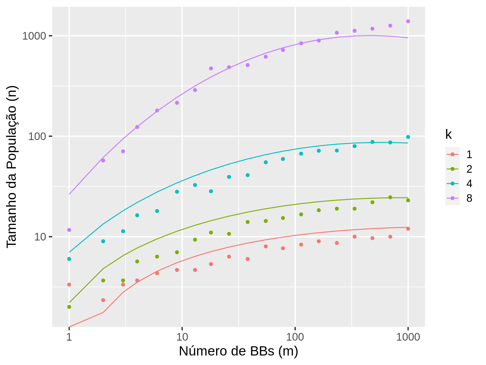

Sobre risco de ótimos locais dominarem.
Função do tamanho da população \(n\):
\[ n \approx -\ln(\alpha) 2^{k-1}\frac{\sigma_{BB}\sqrt(2m)}{d} \] Em que
# gera populacao de tamanho n, boloco m e trapsize k (array 3D)
gera_populacao <- function(n, m, k) {
torch_randint(0, 2, size = c(n, m, k))
}
# verifica se tem solucao otima na populacao
populacao_tem_pelo_menos_um_bloco_otimo_por_individuo <- function(populacao) {
dims <- dim(populacao)
m <- dims[2]
k <- dims[3]
as.logical(((populacao$sum(3) == k)$sum(1) > 0)$sum() == m)
}
# funcao n da populacao simulada
n_simulado <- function(k, m) {
pop_tem_solucao_otima = FALSE
n <- 1
while(n < 2000 & !pop_tem_solucao_otima) {
pop <- gera_populacao(n, m, k)
pop_tem_solucao_otima <- populacao_tem_pelo_menos_um_bloco_otimo_por_individuo(pop)
n = n + 1
}
return(n)
}
n_simulado_h_vezes <- function(k, m, h = 3) {
res <- mean(replicate(h, n_simulado(k, m)))
}
# grade de parâmetros (k, m, s, d)
parametros <- expand.grid(
k = c(1, 2, 4, 8),
m = round(10^seq(0, 3, l = 20)),
s = 2,
d = 1
) %>%
distinct() %>%
rowwise() %>%
mutate(
a = 1/(m*k),
n_teorico = n_teorico(k, m, s, d, a),
n_simulado = n_simulado_h_vezes(k, m)
)
knitr::kable(head(parametros))
| k | m | s | d | a | n_teorico | n_simulado |
|---|---|---|---|---|---|---|
| 1 | 1 | 2 | 1 | 1.000 | 0.000000 | 3.333333 |
| 2 | 1 | 2 | 1 | 0.500 | 3.921033 | 2.000000 |
| 4 | 1 | 2 | 1 | 0.250 | 31.368261 | 6.000000 |
| 8 | 1 | 2 | 1 | 0.125 | 752.838254 | 11.666667 |
| 1 | 2 | 2 | 1 | 0.500 | 2.772589 | 2.333333 |
| 2 | 2 | 2 | 1 | 0.250 | 11.090355 | 3.666667 |
f_sbb <- function(k, m) 2^(1.5 - k/1.5) * m^(-0.6)*m^(0.12*k) * exp(-0.01*k*(log(m)^2))
parametros %>%
mutate(
s = f_sbb(k,m),
n_teorico = n_teorico(k, m, s, d, a)
) %>%
ggplot(aes(x = m, colour = factor(k))) +
geom_point(aes(y = n_simulado)) +
geom_line(aes(y = n_teorico)) +
scale_x_log10() +
scale_y_log10() +
labs(x = "Número de BBs (m)", y = "Tamanho da População (n)", colour = "k", linetype = "sigmaBB", shape = "sigmaBB")
